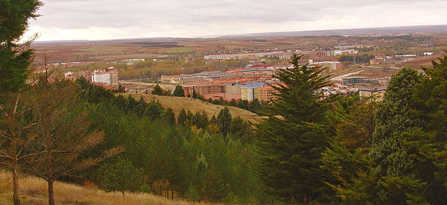
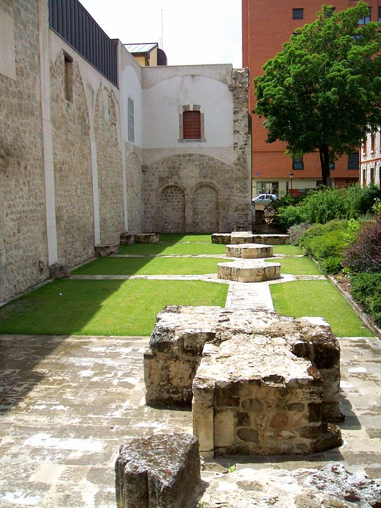

Burgs
Historia y cultura
Turismo y ocio
Gastronomía
Historia y cultura
Explora
La cuna del Cid Campeador
Leer más >

El Cerro de San Miguel
Leer más >

Historia del Monasterio de San Agustín
Leer más >